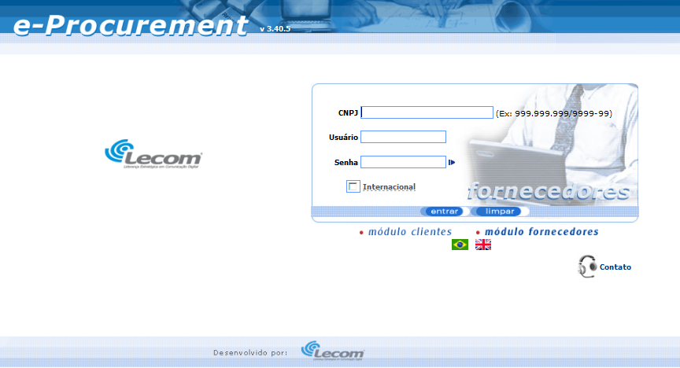

Documentação do Fornecedor - eProcurement
E-Procurement é uma solução Web que permite otimizar os processos de compras de materiais e serviços, tais como: cotação, negociação e emissão de pedidos.
O objetivo deste documento é demonstrar as funcionalidades e formas de uso da ferramenta e-Procurement (v.4) da Lecom ao usuário, facilitando seu uso.
O e-Procurement possui dois módulos principais: módulo Clientes e módulo Fornecedores, os quais são acessados por meio da tela inicial da ferramenta e serão detalhados posteriormente.
Para acessar o e-Procurement, basta abrir o navegador Web “Internet Explorer” e acessar a url (caminho) do e-Procurement fornecida pela Lecom. Será exibida uma tela onde será possível escolher qual módulo se deseja acessar, como mostra a figura a seguir:
Note que, existem duas opções logo abaixo dos botões “entrar” e “limpar” chamadas “módulo clientes” e “módulo fornecedores”, basta clicar sobre a opção desejada para acessar seu respectivo módulo.
A ferramenta está preparada para funcionar com dois idiomas: Português e Inglês. Para alternar entre os dois idiomas, basta clicar sobre a bandeira correspondente ao idioma desejado (observe a figura 1). Fazendo isto, automaticamente a página será atualizada e as informações estarão escritas no idioma selecionado.